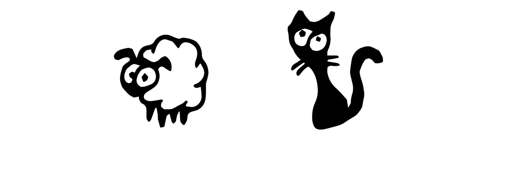
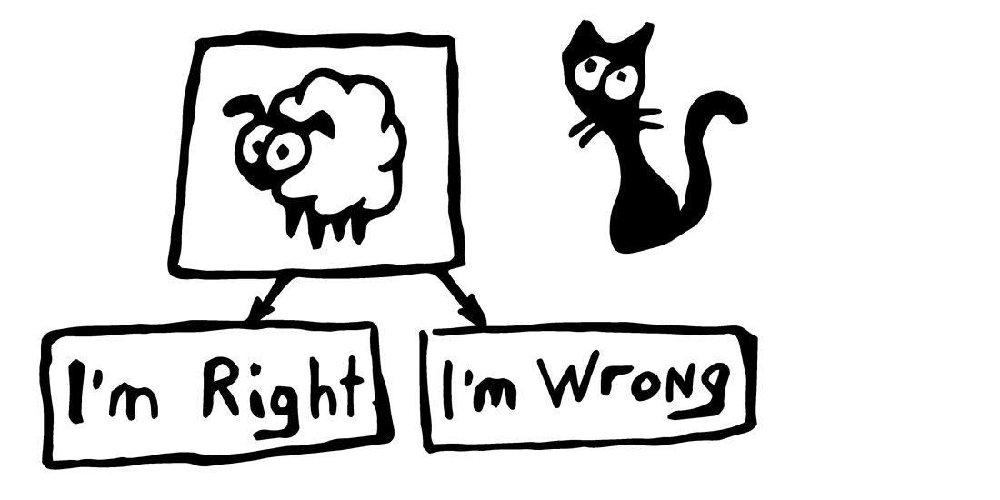
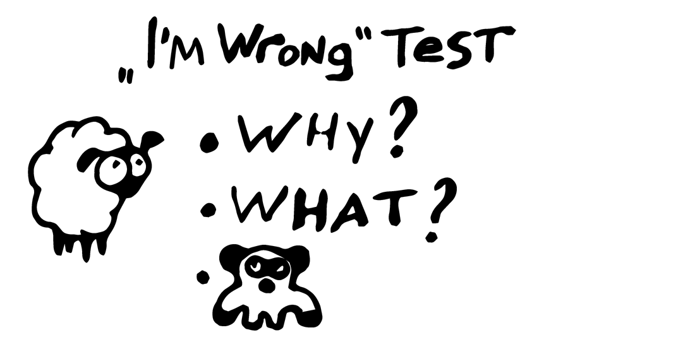

Метод самоопровержения и приходящая панда в принятии неоднозначных решений
Некоторые вопросы не имеют точного решения, но все равно требуют доказательств для правильного ответа. Например такой вопрос:

Кого из этих зверей выбрать символом поздравительных открыток? Или, чтобы придать солидности: Какой из этих двух логотипов принесет успех транснациональной корпорации с оборотом 3 млрд. евро?
Сам вопрос не сложный, иногда даже очевидный. Но необходимо сформулировать правильный ответ, когда этого требуют совет директоров или собственные сомнения. В попытках доказать свое интуитивное решение могут возникнуть трудности.
Докажите что вы ошиблись
Это простой и эффективный способ доказать почему очевидный (для вас) ответ будет правильным решением (для всех).

Приближается год овцы и на поздравительной открытке овца будет великолепна! Логично же! (или нет)
В деловых спорах, я сам и мои оппоненты чаще инстинктивно доказывают свою правоту, чем принимают аргументы собеседника. Поэтому логичные аргументы не всегда помогают принять решение. А тем более, в 99% случаев правы все спорящие. Можно получать фан от процесса переговоров, но лично мне жалко тратить лишнее время.
Чтобы сократить время — можно с таким же упорством и усердием доказать что я ошибся. Бонус в том, что найти ошибку намного легче, чем доказать её отсутствие.
Простейший тест нахождения ошибок

Ключевые вопросы теста: Почему я ошибся? Что теперь делать? И эффективный метод приходящей панды (на самом деле PANDAN, но панда смешнее).
Почему я ошибся?
Я очень люблю этот вопрос! Он превращается в красивую головоломку из серии «При каких условиях, очевидный X не является истиной». В случае со зверями, можно предположить что получатели открыток подумают, будто их назвали овцами и обидятся (видел своими глазами такое пару раз). Но это не моя проблема.
Уделяя головоломке хотя бы пять минут времени, можно немного посмеяться и размять мозги. А как максимум — найти огромное упущение в своих расчетах и вовремя исправить ошибку.
Когда на вопрос не хочется отвечать логикой, можно пройти тест на эмоциональном уровне. Схватиться за голову и как можно искреннее спросить самого себя: «Ну почему?! Почему я так ошибился с этой овцой?!».
Что теперь делать?
Поставте себя в ситуацию: вы все продумали и сделали как надо, но все равно ошиблись. Причина не важна. Важно что вы будете делать прямо сейчас в этой ситуации?
Ответ тоже не важен.
Приходящая панда
Когда все ключевые вопросы обдуманы и первоначальное решение не нашло никакой критики, то можно спокойно возвращаться к работе. Тест на отсутствие ошибок пройден.
Но если несмотря на все усилия остались сомнения (у вас, или у совета директоров), поздравляю — к вам пришла панда.
Она вся такая неадекватная и говорит вам неадекватные вещи. Возможно, противоречащие самой логике проекта и бизнеса в целом. Возможно, связанные с вашими личными комплексами и предпочтениями. Возможно, панда просто танцует.
Если вы сомневаетесь — потанцуйте с пандой и сделайте так, как она говорит. И тогда не будет сомнений, логично же!
Заключение
Сказано более чем достаточно. Находить ошибки легче, чем доказывать их отсутсвие. Используя эту аксиому , можно увеличить эффективность планирования. Выше было немного разжевывания, смешные картинки и завлекающий заголовок.